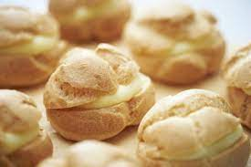

Recetas
Profiteroles de Crema
Ingredientes
- 125cc de agua y 125cc de leche (puede ser todo leche o todo agua)
- 100grs de manteca, margarina o aceite
- 1 cdta de azúcar
- 1 cdta de sal
- 150grs de harina de trigo 0000
- 3 o 4 huevos
- Chocolate baño de repostería

Preparación
- Poner en una cacerola el agua, la leche, el azúcar, la sal y la manteca. Revolver y esperar a que entre en ebullición.
- Agregar la harina y revolver enérgicamente. Cuando se haya despegado de los bordes cocinar 1 minuto más y retirar del fuego.
- Colocar la masa en un bol y sumar de a uno los huevos. Revolver bien para que se integren a la masa.
- Ubicar las bombitas en una placa enmantecada y fría. Bajar los picos de la masa con una cucharita humedecida. (Si no tienen manga, pueden armar las bolitas con una cucharita. Sólo toman un poco de masa y la ubican en la placa).
- Hornear a 200ª los primeros 10 mins, luego bajar el fuego a 180º y cocinar hasta que estén listas las bombitas. En total unos 20 mins aprox.